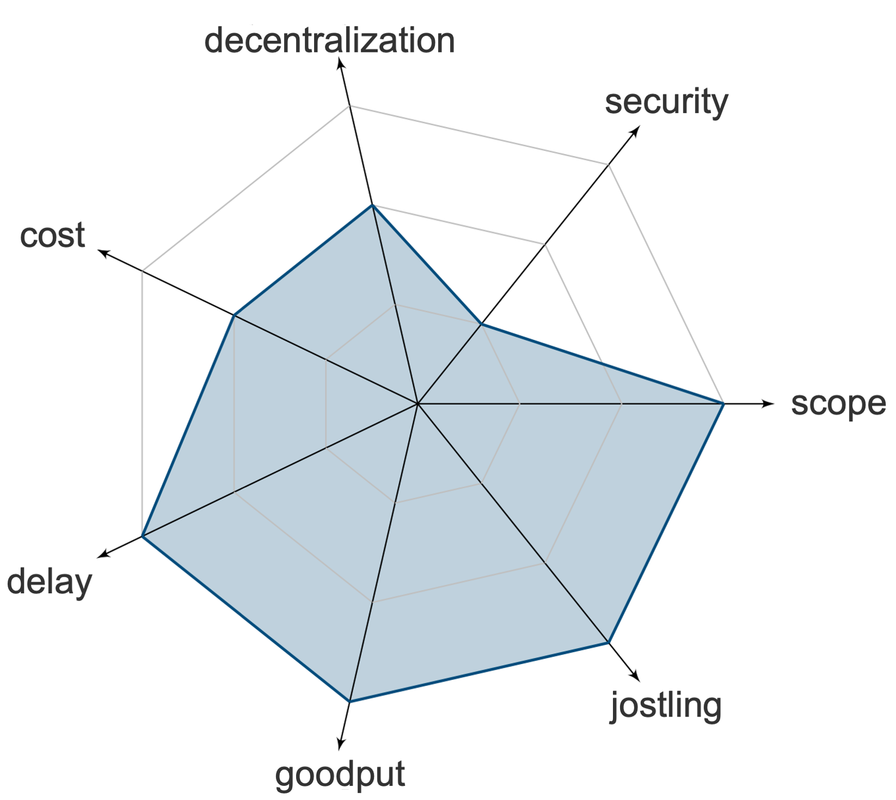

Positives

- Good Scope
- Minimal Jostling
- No increased delay
- No decreased goodput

Negatives

- Increased cost
- Reduced decentralization
- Security in case of byzantine committee
Off-chain commit & reveal protocols order transaction in two phases. In the first phase, users send their transactions to a committee. The committee then agrees on an order through consensus. In the second phase, once the order is agreed upon, the committee decrypts the transaction with their threshold signatures.
This page is mantained by the Distributed Computing group at ETH Zürich. We are not liable for any false information.
Copyright © 2023 Distributed Computing Group, ETH Zürich